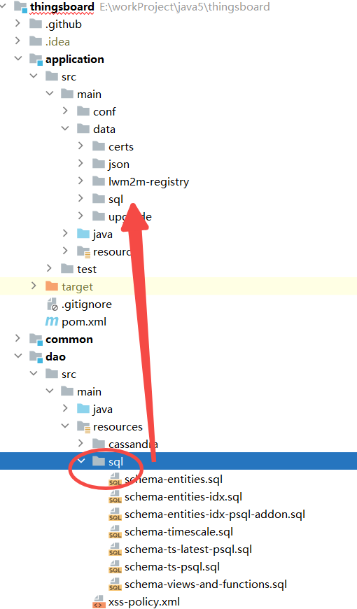
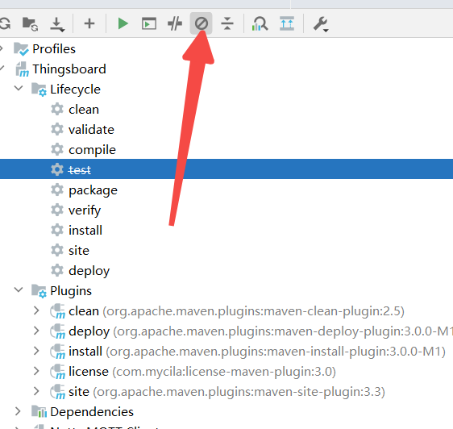
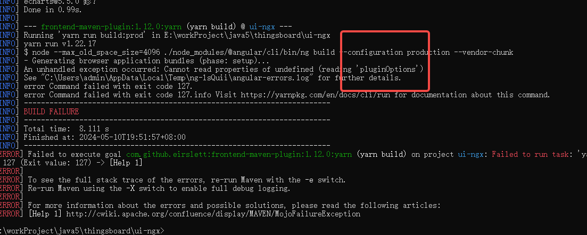

Records of Problems Encountered During the Installation and Initialization of Thingsboard 3.6.4
# Records of Problems Encountered During the Installation and Initialization of Thingsboard 3.6.4
记录
thingsboard3.6.4在导入IntelliJ IDEA 2022.2.3编译报错的一些问题
记录 如何从thingsboard3.6.4弃坑到thingsboard3.6.3
导入步骤简单说一下，先从github下载thingsboard3.6.4 源码 导入代码前提准备是环境，我的环境如下 windows 10
maven version 3.8.1 给 IntelliJ IDEA 2022.2.3 配置好settings.xml 采用从maven官方仓库拉取依赖
IntelliJ IDEA 2022.2.3
IntelliJ IDEA 只需要安装 protocol buffers 和 lombook 就可以了
JDK17,不是jdk11
在本地安装postgreSQL,创建好数据库名thingsboard364
然后导入到IntelliJ IDEA 2022.2.3。
从复制sql脚本到application的src/main/data/目录下
 把 IntelliJ IDEA maven 设置跳过skip test,避免测试过程中遇到地域性测试，语言文本测试 导致通测试不过
 最后点击 IntelliJ IDEA maven package 进行编译项目
我遇到的问题如下：问题1 lombok 在jdk17下版本太低不兼容
class lombok.javac.apt.LombokProcessor (in unnamed module @0x719f35fe)
cannot access class com.sun.tools.javac.processing.JavacProcessingEnvironment
(in module jdk.compiler)
because module jdk.compiler does not export com.sun.tools.javac.processing to
unnamed module @0x719f35fe
解决lombok 报错 The issue you are facing with the error “java.lang.IllegalAccessError: class lombok.javac.apt.LombokProcessor” is related to compatibility problems between Lombok and JDK versions. To resolve this issue, you need to ensure that you are using a compatible version of Lombok with your JDK. Upgrading Lombok to version 1.18.22 or higher should address this problem. Additionally, make sure that Lombok is set up correctly in your project configuration. The error occurs because Java 17 enforces strong encapsulation, and using an older version of Lombok can lead to this issue. By upgrading to Lombok version 1.18.22 or newer, you should be able to resolve the problem. It’s crucial to verify that you are indeed using the correct version of Lombok for your build to avoid compatibility issues
解决方方如下： 这个错误是因为Java 17 强制执行强封装，使用较旧版本的Lombok可能会导致此问题。通过升级到Lombok 1.18.22或更新版本，您应该能够解决这个问题。务必验证您确实正在使用正确的Lombok版本来构建，以避免兼容性问题。
在thingsboard 根项目目录下pom.xml 修改 第85行
<lombok.version>1.18.18</lombok.version>
<lombok.version>1.18.26</lombok.version>
问题2 gradle问题 解决方法更换版本 jdk 11,maven 版本为3.8.2
[INFO] --- gradle-maven-plugin:1.0.11:invoke (default) @ http ---
[INFO] jvmArgs: [Ljava.lang.String;@519c5122
[INFO] gradleProjectDirectory: E:\workProject\java5\thingsboard\transport\http\..\..\packaging\java
[INFO] Build
Downloading https://services.gradle.org/distributions/gradle-7.1.1-bin.zip
[INFO] Download https://services.gradle.org/distributions/gradle-7.1.1-bin.zip
...........................................................................................................
[INFO] Build
[INFO] Starting Gradle Daemon
[INFO] Connecting to Gradle Daemon
[INFO] Starting Gradle Daemon
[INFO] Build
[INFO] Run build
[INFO] Evaluate settings
[INFO] Run build
[INFO] Configure build
[INFO] Load projects
[INFO] Configure build
[INFO] Configure project :
[INFO] Compiling build file 'build.gradle'
[INFO] Configure project :
[INFO] Configure build
[INFO] Run build
FAILURE: Build failed with an exception.
* Where:
Build file 'E:\workProject\java5\thingsboard\packaging\java\build.gradle'
* What went wrong:
Could not compile build file 'E:\workProject\java5\thingsboard\packaging\java\build.gradle'.
> startup failed:
General error during conversion: Unsupported class file major version 61
java.lang.IllegalArgumentException: Unsupported class file major version 61
1 error
* Try:
Run with --stacktrace option to get the stack trace. Run with --info or --debug option to get more log output. Run with --scan to get full insights.
* Get more help at https://help.gradle.org
BUILD FAILED in 18m 29s
[INFO] Build
[INFO] Deleting unused version-specific caches in E:\workProject\java5\thingsboard\packaging\java\.gradle
[INFO] Build
[INFO]
问题3 angular js的问题 解决方法：换3.6.3版本
试了梯子没有问题，全局下载tun模式。依然无效
 报错如下
[error] TypeError: Cannot read properties of undefined (reading 'pluginOptions')
at module.exports (E:\workProject\java5\thingsboard\ui-ngx\extra-webpack.config.js:71:57)
at CustomWebpackBuilder.<anonymous> (E:\workProject\java5\thingsboard\ui-ngx\node_modules\@angular-builders\custom-webpack\dist\custom-webpack-builder.js:32:50)
at Generator.next (<anonymous>)
at fulfilled (E:\workProject\java5\thingsboard\ui-ngx\node_modules\@angular-builders\custom-webpack\dist\custom-webpack-builder.js:5:58)